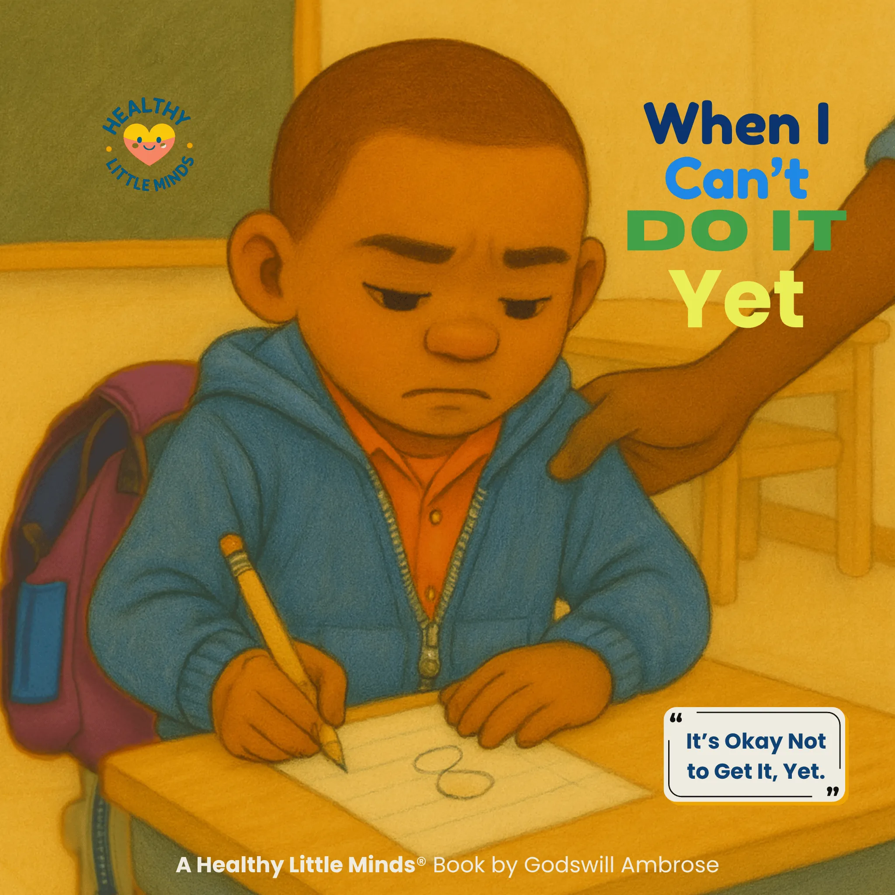

When I Can’t Do It Yet
A gentle story about trying again, growing through hard moments, and discovering that not yet is not never.
Read the bookDisappointment happens when things don't match our hopes. It's okay to feel sad — there are healthy ways to process disappointment and move forward with confidence.
Expecting too much can make outcomes feel worse when they don’t match.
Seeing others treated differently can cause hurt and disappointment.
Missing out on something you wanted is naturally disappointing.
When plans or promises aren’t clear, it can lead to misunderstandings.
Comparing yourself to others often increases disappointment.
Big or sudden changes can leave us feeling unsettled and let down.
Saying 'I'm disappointed' helps your brain process it more quickly.
It's okay to be sad — give yourself a safe moment to feel it.
Look for what you learned or what you can try next time.
Choose one tiny next step to rebuild confidence.
Sharing your disappointment makes it easier to carry.
Be as gentle with yourself as you would be with a friend.

A gentle story about trying again, growing through hard moments, and discovering that not yet is not never.
Read the book